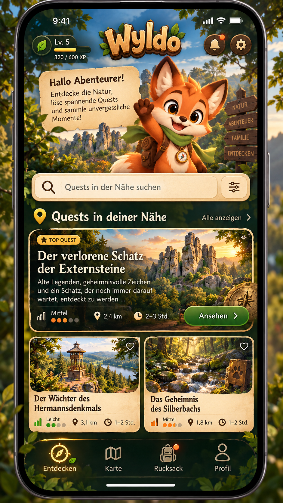
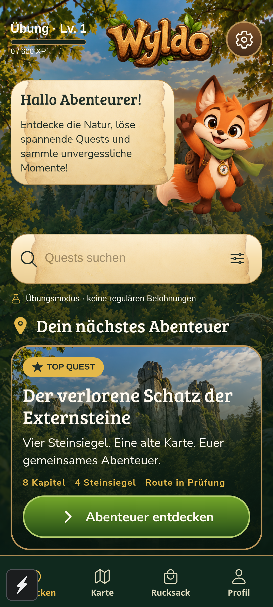
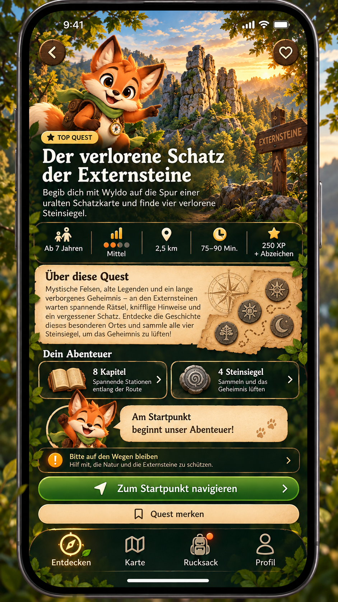
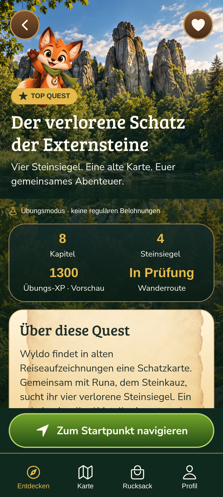
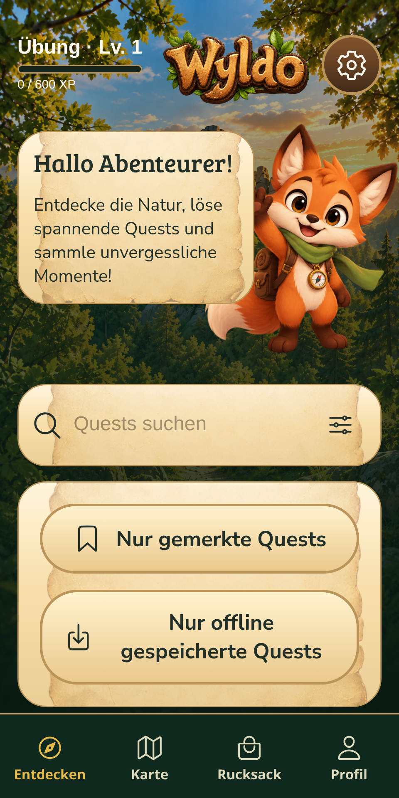
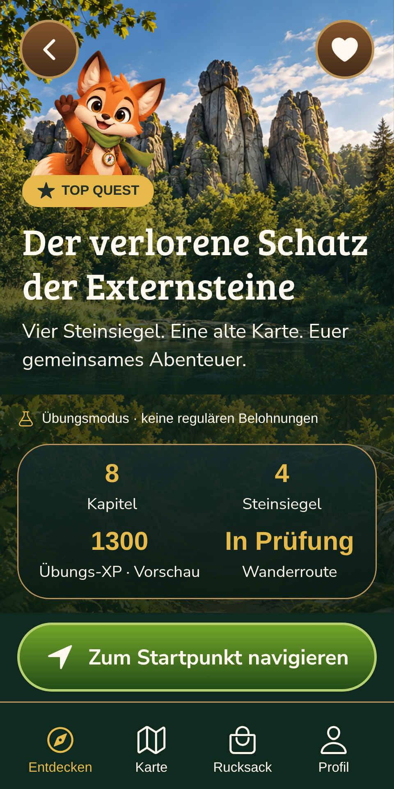
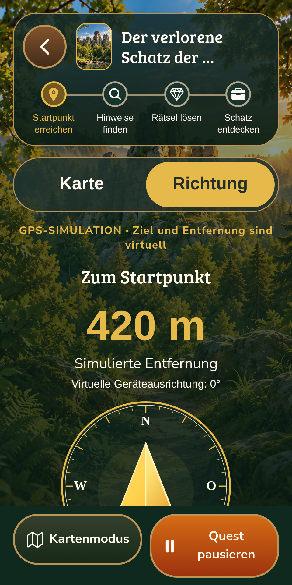

Phasen 1–3 · 16.10.2026. Links jeweils die verbindliche Referenz, rechts die laufende App in Expo Web. Die Aufnahmen zeigen echte UI, keine montierten Mockups. Smartphone-Abnahme und die weiteren Spielfunktionen stehen noch aus. Prüfbericht und Einschränkungen.
Original-Wyldo, Holzlogo, Wald-/Goldstil, tatsächliche Questkarte mit Suche, Filtern und Merkliste. Zusätzliche erfundene Quests und reguläre XP bleiben ausgespart.


Geschichte und Aktionen sind scrollbar, die Navigation zum Startpunkt bleibt erreichbar. Ungeprüfte Strecke und Dauer werden nicht als gemessene Daten übernommen.


Kein horizontaler Bildüberlauf, Hauptaktionen in Details und Navigation bleiben erreichbar. Die Entfernung steht auf niedrigen Displays über dem Kompass.



Nach dieser Sichtprüfung wartet die Entwicklung auf deine Designfreigabe. Entwicklungsplan · Startanleitung